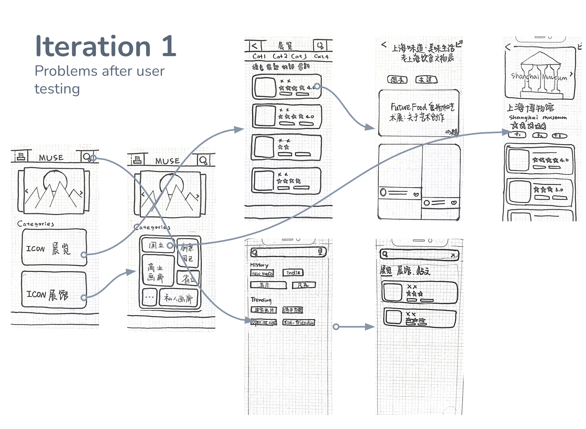
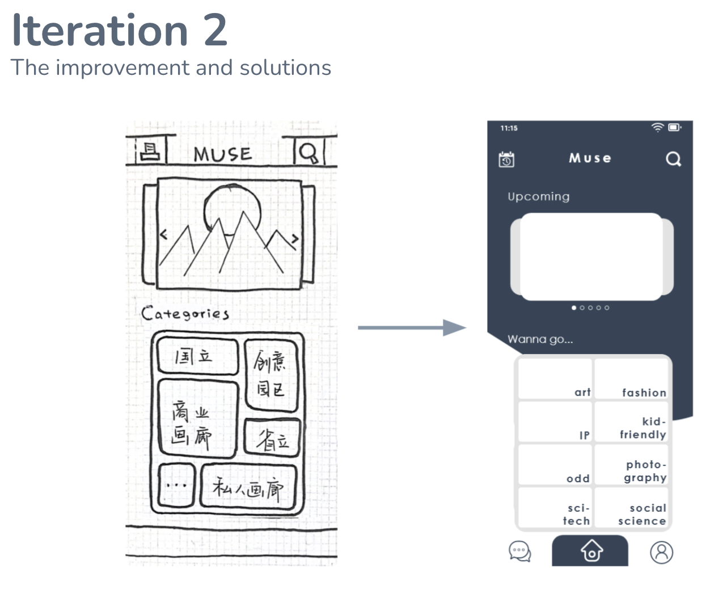
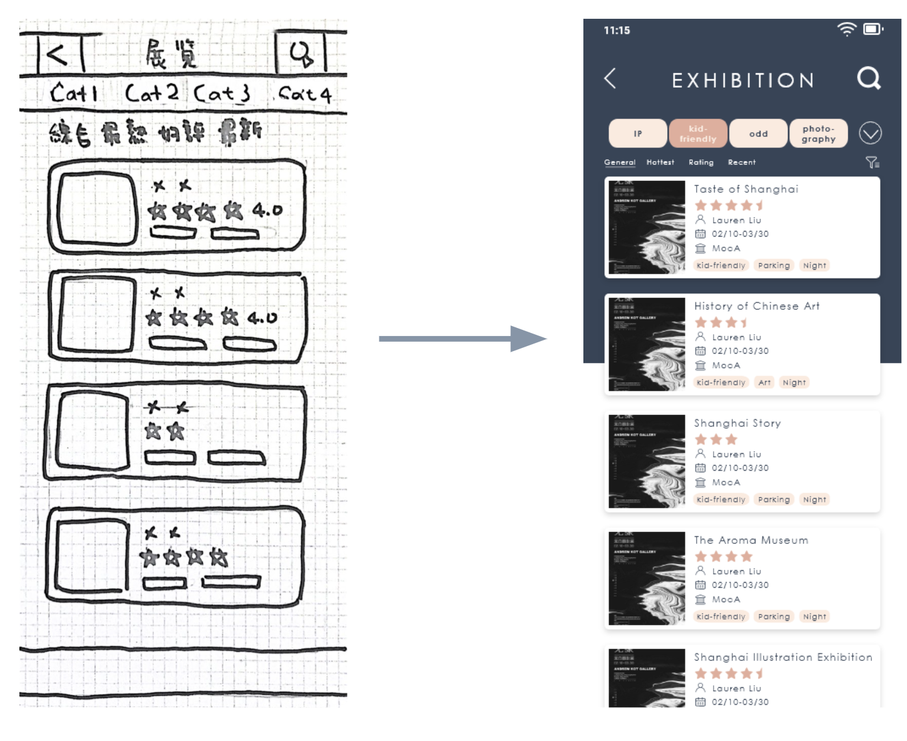
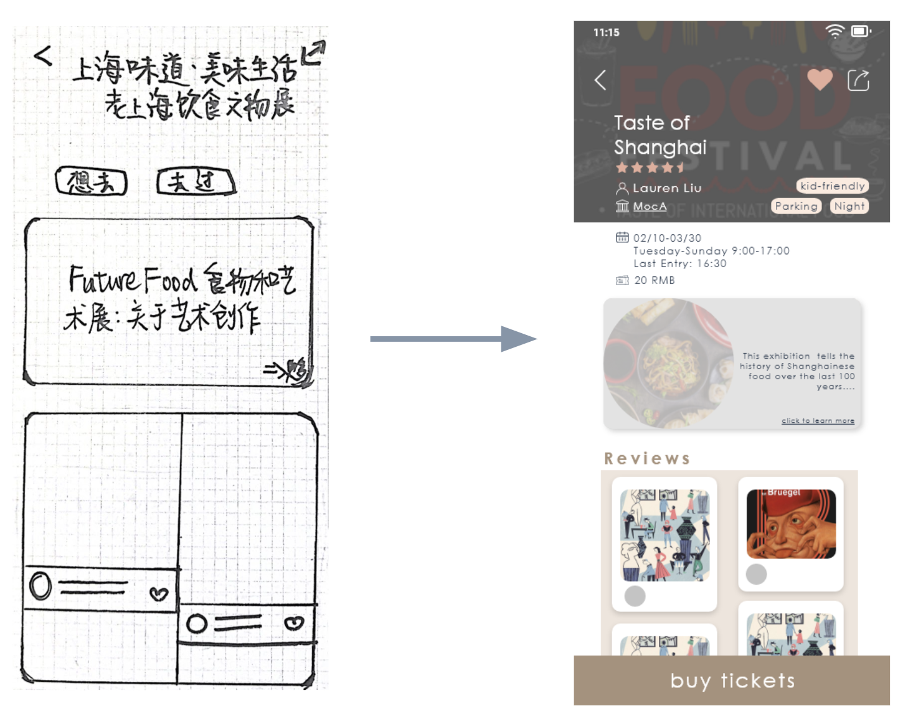
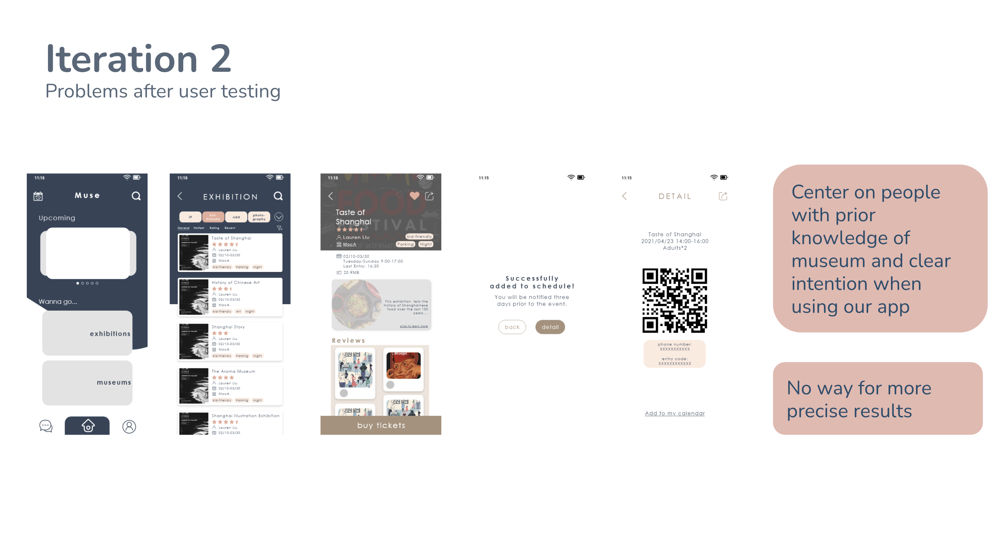
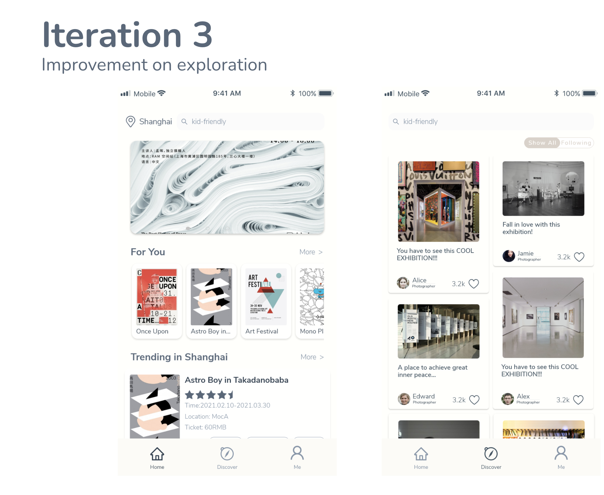

Using conventional categorizing method on exhibitions and museums
Adding search bar and giving hint(history and trending) to help users find an exhibition
Having “want to go” and “visited” as to buttons on the page.

Users had little idea about which category they are in
Only having basic elements on the list.
Only having section title for description page.
“Want to go” and “visited” made people confused.

Applying primary color
Adding navigation bar
Section title changed to be more welcoming
Categorizing exhibitions by themes as main approach.

Adding signifying elements to tell the user where he at instead of plainly giving out options on the top
Having more precise tags in addition to thematic categories so as to provide users with more precise results (tags like parking, open at night/ on weekends)

Removing misleading button
Basic description of the exhibition on the main detail page.
Incorporate buying tickets into the storyline


Adding area of exploration after user testing and second round of survey that we conducted
Homepage suggestions-Daily recommendation -For You -Trending
Discover page to explore exhibitions and generate ideas
Adding area of exploration after user testing and second round of survey that we conducted